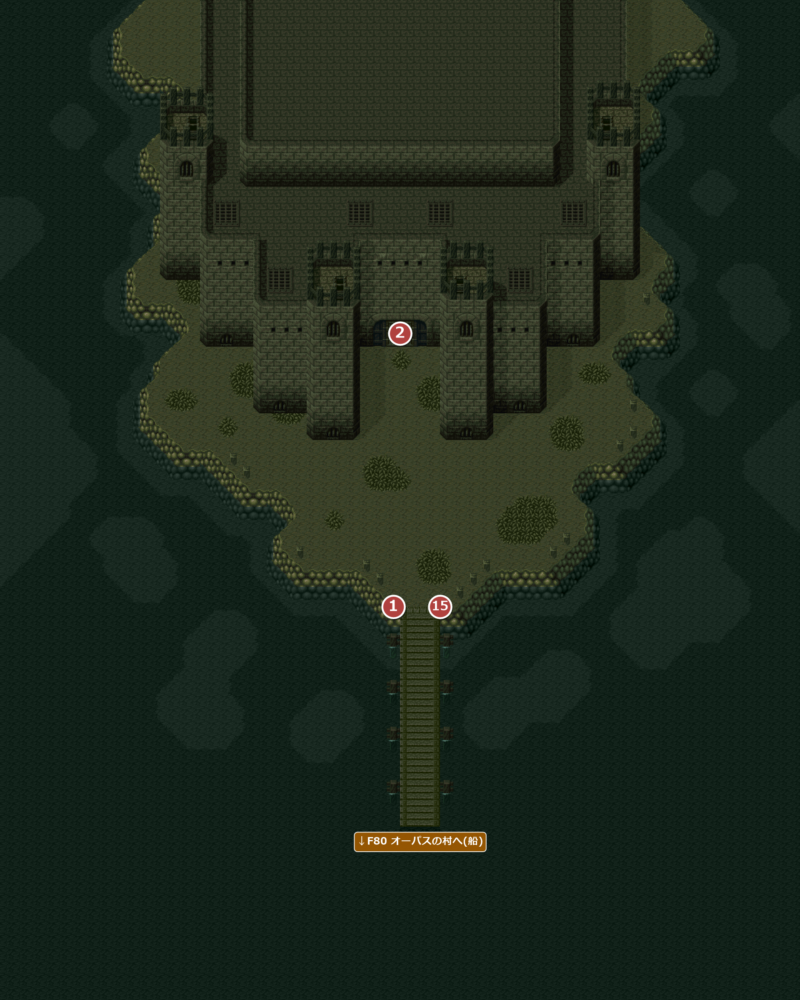
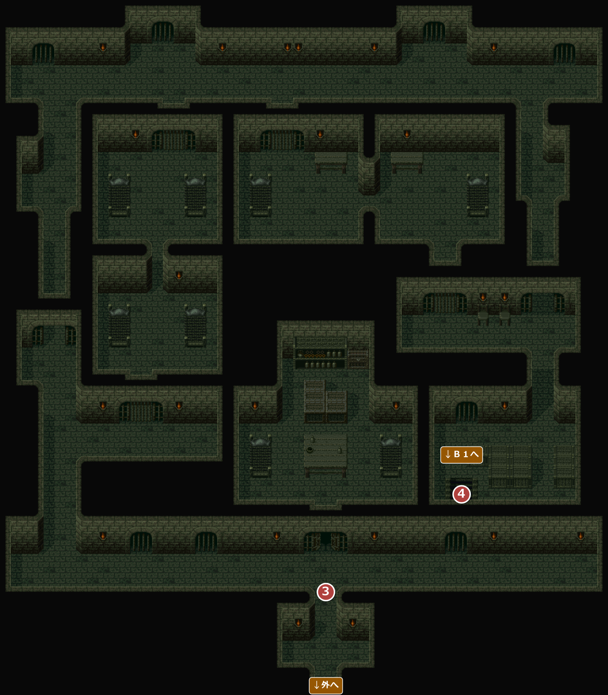
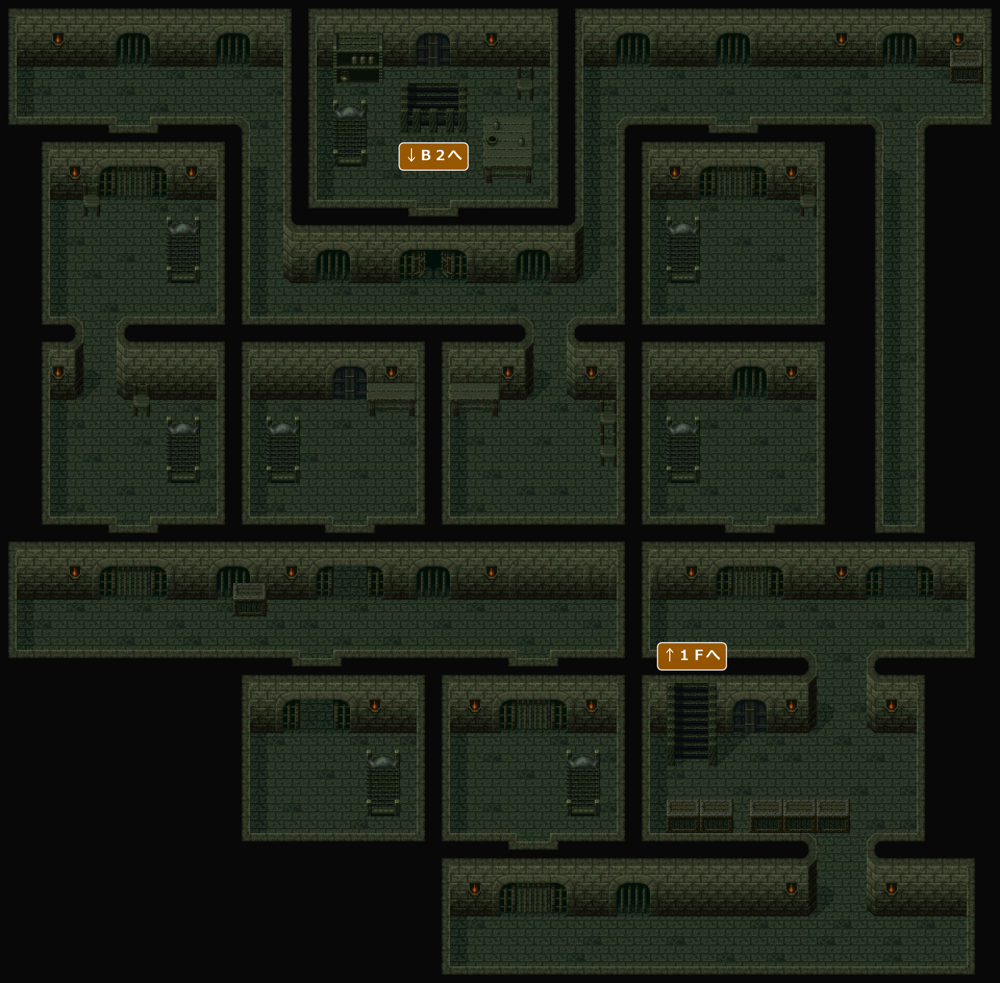
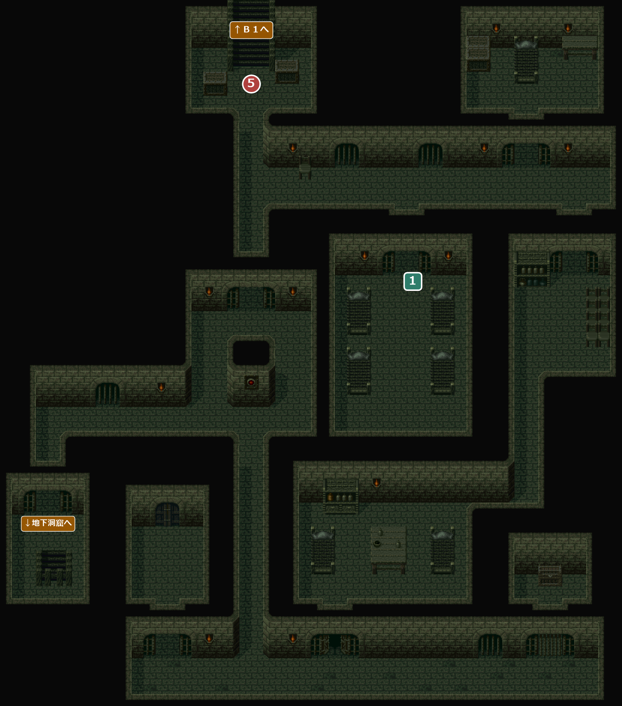
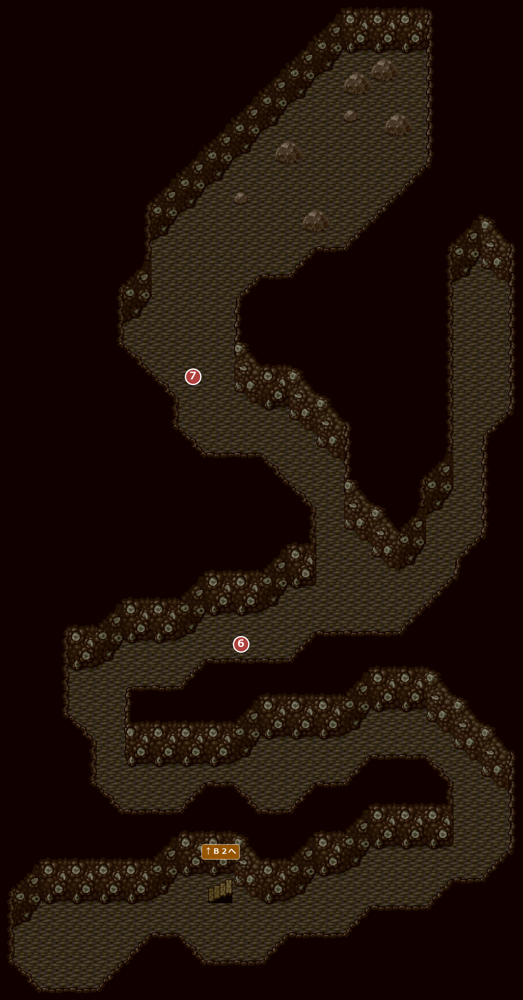
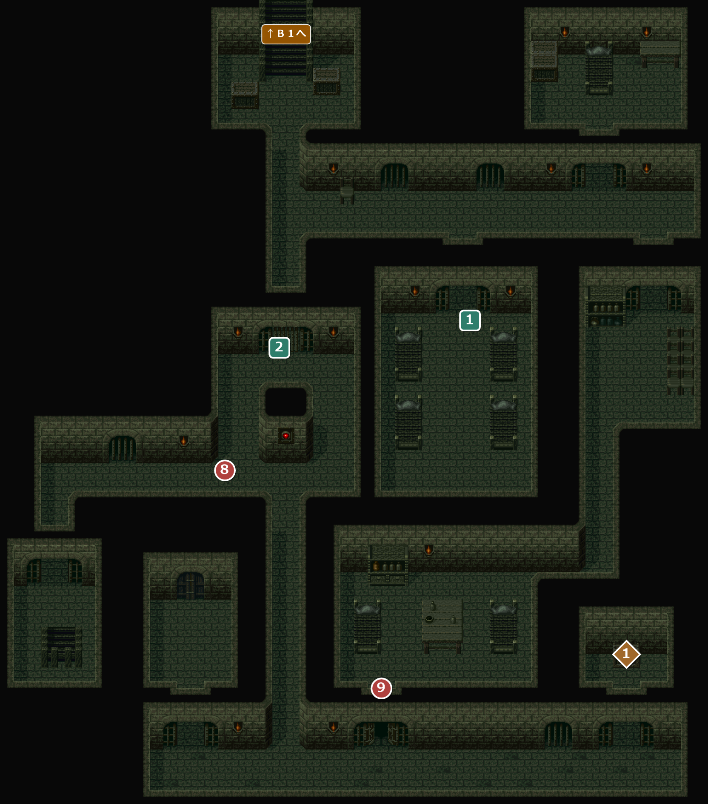
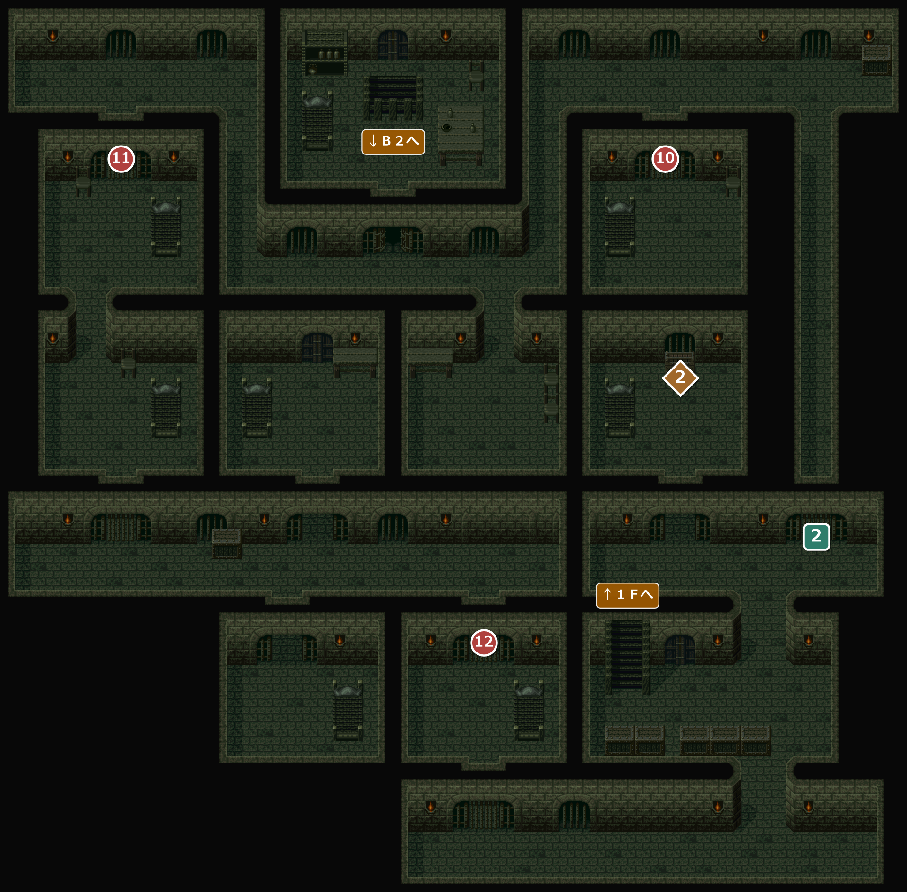
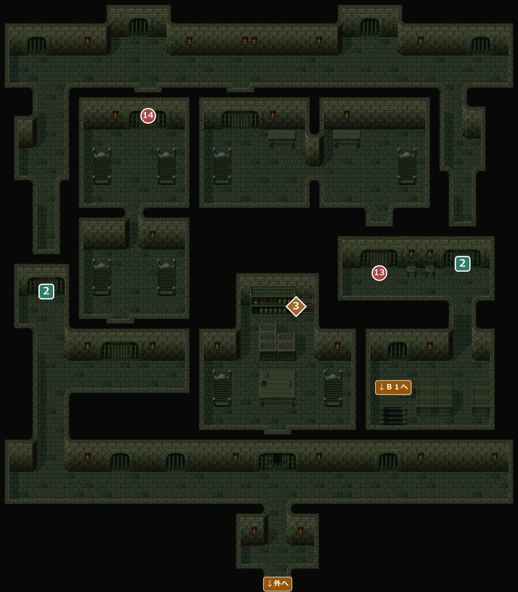

FIELD84・85・89
囚人島・囚人島地下洞窟
エンカウント率0% / 0.78% / 1.95%オーパスの沖の監獄の島。エドが何者かに操られるきっかけになった場所で、建物の下の地下洞窟まで降りていく。洞窟から戻る帰り道は、見た目は行きとほぼ同じだが、内部のデータは別の地図に切り替わり、開いている扉・閉まっている扉が行きと違う。
→ ほかの FIELD へ1メインイベント1サブイベント1宝箱・落ちている物
8400外

エンカウント
エンカウントなし。
イベント
1
囚人島
場所: 桟橋(X58-66 Y91)
島に着くと「《囚人島》」と地名が出る。スカルマスターを倒すまで、船は来ない。
次へ建物の門へ(②)。
2
門
場所: 建物の正面の門(X58-60 Y53)
中から「誰だ！」と声がする。エドが名乗ると門が開き、中に入れる。
次へ１Ｆへ(③)。
15
8401１Ｆ(行き)

元のマップは 60×75 マス。右約4マス・下約11マスの何もない部分を切って載せている。
エンカウント
エンカウントなし。
！中央の部屋の宝箱は、番兵に「その箱には、大事な物がしまってありますから…開けないで下さい」と止められて、行きでは開けられない(帰りに開けられる。◆3)。
イベント
3
番人
場所: １Ｆの入口の先(X58-60 Y109)
番人によると、前に来たときのエドは地下３Ｆのスカルマスターのところへ行ったという。エドには覚えのない名前。
次へ東の階段へ(④)。
4
エドの記憶
場所: １Ｆの東の階段(X84 Y91)
階段を降りるとき、エドが「こうして階段を降りて行ったんだ」と少しずつ思い出す。
次へＢ１を抜けてＢ２へ(⑤)。
8402Ｂ１(行き)

エンカウント
エンカウントなし。
8403Ｂ２(行き)

元のマップは 60×60 マス。左約8マスの何もない部分を切って載せている。
エンカウント
エンカウントなし。
！南東の小部屋の宝箱は鉄格子の向こうにあり、行きではまだ取れない(帰りに取れる。◆1)。
イベント
5
エドの記憶
場所: Ｂ２の階段を降りてすぐ(X56-58 Y13)
エド「この階の下に、洞窟があったんだ…何かを皆が掘っていた…」
次へ西の小部屋の階段から地下洞窟へ(⑥)。
サブイベント
1
ベッドルーム
場所: Ｂ２の中央の部屋(X80-86 Y47)。行き・帰りとも
「おや、ここには気持ちのよさそうなベッドがある…」。無料で休めて、冒険の記録もできる。「休まない」などを選ぶと1歩押し戻される。
バグF82 要塞迷路Ｂ２のベッドルームと同じく、「休まない」を選んだ後、押し戻される間に横のキーを押し続けていると、部屋の中へ入れてしまう。
このマスは部屋の床の一番上の段にあり、左右にも床が続いているため。部屋の中から外へ出ようとしてこのマスを踏んでも同じ選択肢が出て、出ていくところなのに「おや、ここには気持ちのよさそうなベッドがある…」と言ってしまう。
このマスは部屋の床の一番上の段にあり、左右にも床が続いているため。部屋の中から外へ出ようとしてこのマスを踏んでも同じ選択肢が出て、出ていくところなのに「おや、ここには気持ちのよさそうなベッドがある…」と言ってしまう。
8900地下洞窟

エンカウント
1歩ごとに 1.95%(平均 51.2 歩に1回)。戦闘になったときに出る組と、その確率:
| ID | 確率 | 前列 | 後列 |
|---|---|---|---|
| 196 | 22.2% | フライアイ×2 | 闇ビック |
| 197 | 22.2% | 死妖蛾 | － |
| 198 | 22.2% | 闇ビック×2 | フライアイ×3 |
| 199 | 33.3% | フライアイ | フライアイ×3 |
！スカルマスターを倒すまでは、入ってきた階段から戻ろうとしても、エド「このまま進もう！ めざすものは、この近くだ…」と止められて戻れない。
イベント
6
エドの記憶
場所: 地下洞窟の中ほど(X36 Y93-99)
エドが、囚人たちがここで古い骨を掘り出していたことを思い出す。
次へ洞窟の奥へ(⑦)。
7
スカルマスター戦闘
場所: 洞窟の奥(X24-34 Y57)
囚人に採掘を指揮していたスカルマスターが、エドを操っていた正体だった。倒すと囚人たちが、スカルマスターはガリハアクの骨から生まれ、見つけた骨をランパル王に送っていたと明かす。非常ベルが鳴り、囚人たちに急かされて島を脱出する。
戦闘スカルマスター(前列)
次へはしごからＢ２へ戻る(⑧)。
8500Ｂ２(帰り)

元のマップは 60×60 マス。左約8マスの何もない部分を切って載せている。
エンカウント
1歩ごとに 0.78%(平均 128 歩に1回)。戦闘になったときに出る組と、その確率:
| ID | 確率 | 前列 | 後列 |
|---|---|---|---|
| 193 | 33.3% | 看守 | － |
| 194 | 33.3% | 警備兵×2 | 警備兵 |
| 195 | 33.3% | 看守×3 | － |
！地下洞窟への階段は、エド「早くこの島を脱出しよう！」と止められて戻れない。
イベント
8
警報
場所: Ｂ２の西の通路(X48 Y67-73)
アイリス「見て！ 赤いライトがついてる！ 警報…！？」。ここから先、近づくと鉄格子が閉まって道がふさがれる場所がある(サブ②)。
次へ南の通路を回って大部屋へ(⑨)。
9
看守戦闘
場所: 南の大部屋の入口(X70-72 Y101)
看守「スカルマスター様に逆らうやつめ！！」と戦闘になる。1回だけ。
戦闘城兵(前列)
！逃げられる(逃げても二度と出ない)。
次へ大部屋から東を回って北の階段へ。Ｂ１へ(⑩)。
サブイベント
2
ふさがれる鉄格子
場所: 帰りのＢ２・Ｂ１・１Ｆの4か所
近づくと目の前で鉄格子が閉まり、その道は通れなくなる。同じ場所の2つの台詞は、先に近づいた側の片方しか見られない(どちらかで閉まると、もう起きない)。
| 場所 | 方向 | セリフ |
|---|---|---|
| Ｂ２ X56-58 Y51 | 南側から | エド「！ 我々を閉じこめるつもりか」 |
| 北側から | エド「！ おどかすなよ！」 | |
| Ｂ１ X106-108 Y71 | 北側から | 主人公「ここもダメか！」 |
| 南側から | 主人公「まったく、心臓に悪いぜ！」 | |
| １Ｆ(東) X96-102 Y57 | 南北どちらからも | (セリフなし) |
| １Ｆ(西) X8-10 Y63 | 北側から | エド「くそっ！！ おどかすんじゃないぜ！ 出口はすぐそこなんだがな」 |
| 南側から | エド「くそっ！！ おどかすんじゃないぜ！」 |
宝箱・落ちている物
1
宝箱
場所: Ｂ２(帰り)の南東の小部屋(X106-108 Y99)
時限帰りに建物の外へ出るまで。外に出ると中に戻れず、二度と取れない。
「箱を開けると、中には古い楽譜が入っていた。『冷風の歌』だ！」
入手 冷風の歌
冷風の歌
8501Ｂ１(帰り)

エンカウント
1歩ごとに 0.78%(平均 128 歩に1回)。戦闘になったときに出る組と、その確率:
| ID | 確率 | 前列 | 後列 |
|---|---|---|---|
| 193 | 33.3% | 看守 | － |
| 194 | 33.3% | 警備兵×2 | 警備兵 |
| 195 | 33.3% | 看守×3 | － |
イベント
10
囚人話さなくても先へ進める。
場所: Ｂ１の北東の独房(X86-88 Y21)
独房の囚人が「おれたち囚人が脱出路を作るぞ！」と言い、ほかの囚人のところへ行くよう勧める。
次へ北西の独房へ(⑪)。
11
囚人
場所: Ｂ１の北西の独房(X14-16 Y21)
囚人「さあ！ この独房を通ってゆけ！」。独房の上下の鉄格子を開けてくれて、南の通路へ抜けられる。
次へ南の通路の独房へ(⑫)。
12
囚人
場所: Ｂ１の南の通路の独房(X62-64 Y85)
囚人「みんな、ここを通れ！」。独房の上下の鉄格子を開けてくれて、東の階段へ行ける。
次へ１Ｆへ(⑬)。
宝箱・落ちている物
2
宝箱
場所: Ｂ１(帰り)の東の部屋(X88-90 Y51)
時限帰りに建物の外へ出るまで。外に出ると中に戻れず、二度と取れない。
「箱を開けると、中にはリュートのパーツが入っていた。トルコ石の装飾だ。」
入手 トルコ石の装飾
トルコ石の装飾
8502１Ｆ(帰り)

元のマップは 60×75 マス。右約4マス・下約11マスの何もない部分を切って載せている。
エンカウント
1歩ごとに 0.78%(平均 128 歩に1回)。戦闘になったときに出る組と、その確率:
| ID | 確率 | 前列 | 後列 |
|---|---|---|---|
| 193 | 33.3% | 看守 | － |
| 194 | 33.3% | 警備兵×2 | 警備兵 |
| 195 | 33.3% | 看守×3 | － |
イベント
13
囚人
場所: １Ｆの階段の北の部屋(X78-84 Y59)
囚人「さあ！ みんな、こっちだ！」。北の独房への鉄格子と、独房から北の通路への鉄格子を開けてくれる。
次へ北の通路を西へ(⑭)。
14
囚人
場所: １Ｆの北西の独房(X30-32 Y25)
注意帰りに建物の外へ出ると、もう中には戻れない(門でエド「やっと脱出できたんだ。今更中に入る事もなかろう…」)。宝箱(◆1〜◆3)を取り残していないか確かめてから出ること。
囚人「みんな、オレたちがついてるぜ！」。独房を通って南の通路へ抜ける鉄格子を開けてくれる。
次へ南の通路から外へ出て、桟橋へ(⑮)。
宝箱・落ちている物
3
宝箱
場所: １Ｆ(帰り)の中央の部屋(X64-66 Y69)
「箱を開けると、中にはのどあめＤＸが入っていた。」
入手 のどあめＤＸ×10
のどあめＤＸ×10
没イベント情報
- 没１Ｆ(帰り)の看守との戦闘 … 帰りの１Ｆに、看守との戦闘のイベントが入っているが、マップにそのマスが置かれていないため起こらない看守「ガリハアク様に歯向かうか！」(看守1体と戦闘)
- 没出現しないモンスターのデータが残されている … 囚人島には、囚人の絵が入っているが、どの戦闘にも出てこない